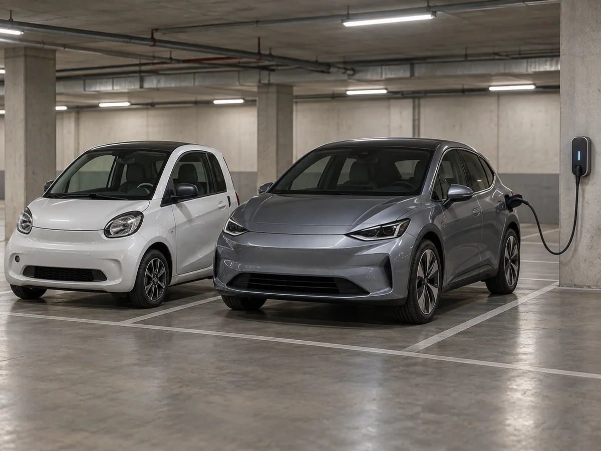
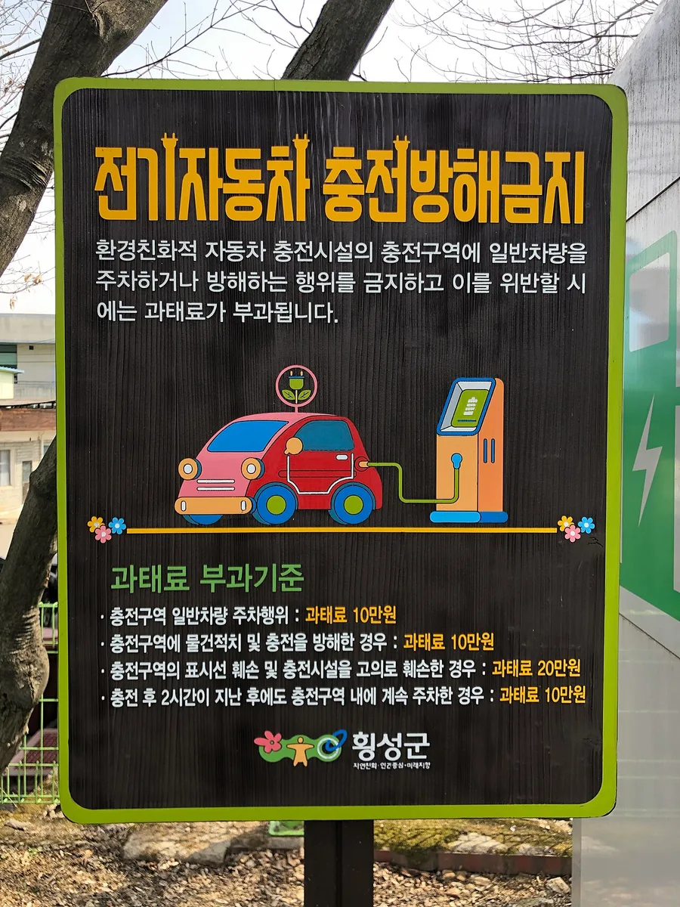
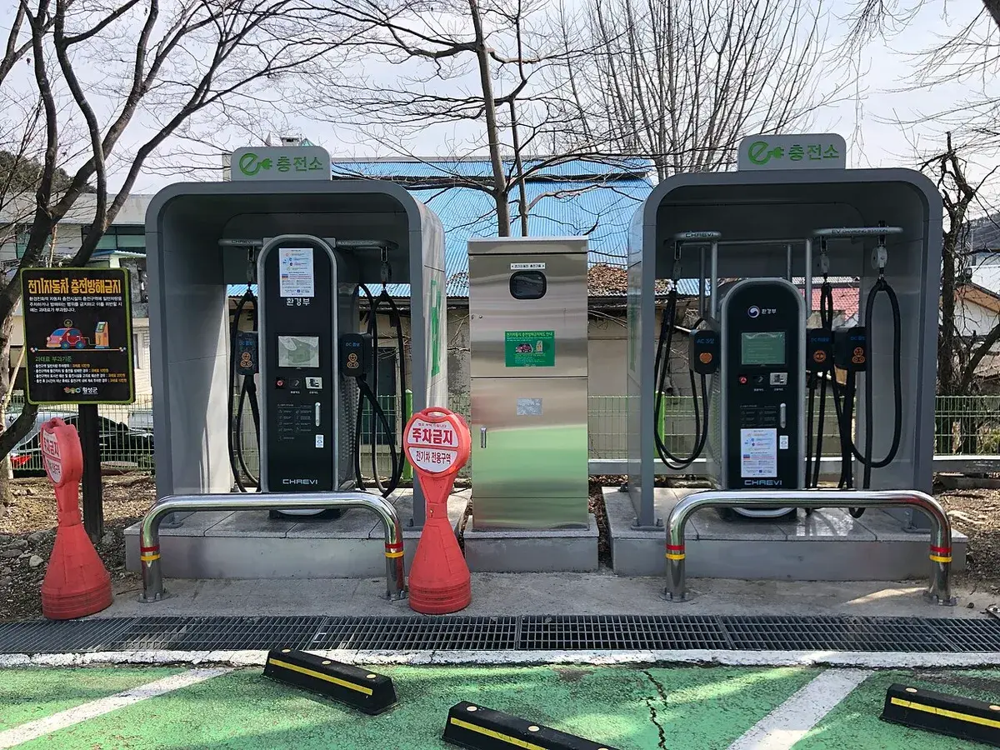
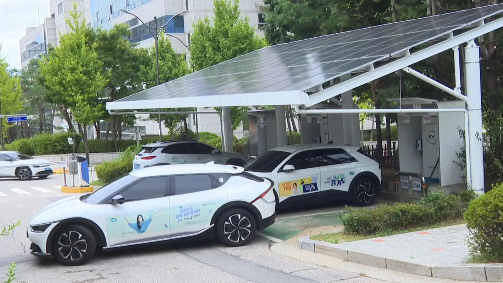

▲ 출차 정산 전에 감면이 적용됐는지 금액 표시를 확인한다(개념 이미지) ⓒ CarPrism (AI 생성 이미지)
"전기차니까 공영주차장은 반값이겠지?" 절반은 맞고 절반은 틀리다. 경형자동차와 환경친화적 자동차에 대해 주차요금의 50% 이상을 감면한다는 큰 틀은 법령에 있지만, 실제 요율과 대상, 인증 방식은 지방자치단체 조례와 주차장 운영기관마다 다르다. 서울시설공단은 경차·저공해차 50%, 서울시는 다자녀 가구 50% 자동감면을 안내하고, 인천공항은 저공해 3종을 20%만 감면한다. 이 글은 공식 안내를 기준으로 감면 대상별 차이, 신청·인증 방법, 충전구역 주차 규정과 과태료를 정리했다. 지자체별 사례는 예시이며 방문 전 해당 기관 안내 확인이 필요하다.
1. 감면의 뿌리 — 법은 '50% 이상', 요율은 조례가 정한다
생활법령정보(법제처)는 노상주차장에서 경형자동차와 전기자동차 등 환경친화적 자동차에 주차요금의 50% 이상을 감면한다고 안내한다. 요율과 징수 방식은 해당 지자체 조례가 정하고, 이용 시간에 따라 다르게 정할 수도 있다. 같은 안내에는 충전 중인 전기차에 첫 1시간 무료 후 50% 감면이 적용된다는 취지의 설명도 있으나, 실제 운영 여부는 주차장마다 다를 수 있어 공식 확인이 필요하다. 생활법령정보 원문은 생활법령정보 바로가기에서 볼 수 있다.
서울의 근거는 서울특별시 주차장 설치 및 관리 조례 제7조다. 자치법규정보시스템 조문 요약 기준으로 장애인·국가유공자 80%, 경형·환경친화적 자동차 50%, 다둥이행복카드·한부모가족 50%를 감면하고, 감면 사유가 둘 이상이면 감면율이 높은 하나만 적용하며 100원 미만 단수는 계산하지 않는다. 조례는 개정될 수 있어 조회 시점(2026년 9월 29일)의 개정 이력 확인이 필요하다.

▲ 경차와 전기차 모두 공영주차장 감면 대상이지만 세부 기준은 운영기관마다 다르다(개념 이미지) ⓒ CarPrism (AI 생성 이미지)
📍 이 글의 '예시' 표기
서울·성남·인천공항·한국공항공사 사례는 공식 안내 페이지를 확인한 대표 예시다. 광역·기초 지자체는 수백 곳에 달해 모두 확인하지 못했고, 전국 통일 기준으로 읽으면 안 된다.
2. 대상별 감면율 — 서울·성남·인천공항 비교
아래는 공식 안내 페이지를 대조한 결과다. 기준일은 2026년 9월 29일 조회 시점이며, 요금·조례는 바뀔 수 있다.
| 대상 | 서울시설공단 직영 공영주차장 | 성남시 공영주차장 | 인천국제공항 |
|---|---|---|---|
| 경차 | 50% | 50% (경차·친환경차 통합 안내) | 50% |
| 전기·수소 등 저공해차 | 50% | 50% (친환경차, 증빙 필요) | 저공해 1·2종 50%, 3종 20% |
| 다자녀 가구 | 50% (다둥이행복카드·조례 제7조, 서울시 자동감면 안내) | 50% (시 발급 증표) | 50% (서류 필요) |
| 장애인 | 80% | 1시간 이내 요금 면제, 이후 50% | 50% |
| 중복 감면 | 가장 높은 하나만 적용 | 안내 확인 필요 | 불가, 높은 하나만 적용 |
✅ 출처마다 달랐던 부분, 이렇게 정리했다
· 다둥이행복카드 감면은 검색 요약에서 자녀 수별 50%·30% 표기가 보였지만, 서울시 조례 제7조 조문 요약과 서울시 안내는 모두 50%다. 30% 표기는 과거 또는 별도 상품(일일권 등) 기준일 수 있어 본문에서는 50%로 정리
· 일부 민간 블로그는 성남시를 100% 면제로 적었지만 성남 공영주차장 공식 요금 안내는 경차·친환경차 50%라 공식 안내를 따름
· 경차·친환경차 50% 감면의 상위 근거인 주차장법 관련 조문 위치(시행령·시행규칙)는 생활법령정보 안내로만 확인했고 조문 번호는 확인하지 못함
각 공식 안내는 서울시설공단 요금 안내 바로가기 성남 공영주차장 안내 바로가기 인천공항 주차요금 바로가기에서 확인할 수 있다.
3. 다자녀 가구 — 자동감면 등록이 관건
서울시는 2024년 8월 21일(수)부터 다자녀 가구의 공영주차장 요금 50% 자동감면을 시작했다(서울시 보도자료, 머니투데이 2024.8.21·경향신문 2024.8.20 보도). 대상은 서울에 거주하며 자녀 2명 이상을 낳거나 입양해 키우는 가구 중 막내가 만 18세 이하인 경우다. 이전에는 출차 때마다 다둥이행복카드를 제시해야 해 불편이 컸다. 2023년 3월에는 두 자녀 가구까지 50% 감면을 확대했다는 보도(서울Pn, 검색 결과 제목 기준)도 있다. 상세는 서울시 안내 바로가기에서 볼 수 있다.
▲ 다자녀 가구는 사전 등록 여부에 따라 출차 때 자동으로 감면이 적용될 수 있다(개념 이미지) ⓒ CarPrism (AI 생성 이미지)
| 항목 | 내용 |
|---|---|
| 감면율 | 50% 자동감면 |
| 대상 | 서울 거주, 자녀 2명 이상(출산·입양), 막내 만 18세 이하 가구 |
| 등록 | 바로결제(oksign.seoul.go.kr)에 차량 사전 등록, 부모 각 1대까지 |
| 등록이 어려운 경우 | 다둥이행복카드를 관리원에게 제시 (비접촉 확인 실패, 세대 분리 등) |
| 유의 | 자동감면 적용 여부는 주차장마다 다르며 바로결제 사이트에서 확인 |
고속도로 통행료의 다자녀 감면은 별개 제도이므로 다자녀·장애인 고속도로 통행료 할인 기사를 함께 보면 된다.
4. 신청·인증 — 자동인식이 안 될 때
서울시설공단은 '지갑없는 주차장' 감면자격 조회를 운영한다. 서울시 주차장 설치 및 관리 조례 제7조를 근거로 장애인 등록 차량 80%, 환경친화적·경형 자동차 50%를 조회할 수 있고, 조건에 맞으면 출차 때 자동으로 감면된다고 안내한다. 조회는 감면자격 조회 안내 바로가기에서 볼 수 있다.
| 대상 | 일반적인 인증 방식(예시) | 안 될 때 |
|---|---|---|
| 경차 | 차량번호 인식 후 자동 감면 | 관리사무소에서 자동차등록증 제시 |
| 전기·수소차 | 차량번호·전산 등록으로 자동 감면 (서울시설공단) | 친환경차 인증(저공해 스티커·종별 확인) 서류 제시 |
| 다자녀 | 바로결제 사전 등록(서울), 시 발급 증표 제시(성남) | 다둥이행복카드·확인증 제시 |
| 공항 다자녀 | 한국공항공사 사전 등록 승인 후 출차 시 자동 (인천 제외 전국) | 출차 후 30일 이내 사후 등록 |
📍 공항 다자녀 등록 조건 (한국공항공사)
2자녀 이상, 막내 만 18세 이하 가구가 대상이며, 등록 서류에서 주민등록번호 뒤 7자리는 가려야 한다. 본인·배우자·직계 가족 소유 차량만 가능하고, 등록 승인은 주말·공휴일에는 처리되지 않는다고 안내한다. 인천공항은 별도 체계다. 등록은 한국공항공사 다자녀 등록 바로가기에서 볼 수 있다.
5. 서울 조례의 그 밖의 감면 — 환승·충전 중·한부모
서울시설공단 FAQ와 조례 요약을 대조하면 감면은 대상 차량 외에도 이용 방식에 따라 붙는다. 지하철 환승주차장, 대중교통 환승, 충전 중 전기차 감면이 대표적이다.
▲ 'P' 표지가 붙은 공영주차장 건물. 감면 기준은 운영 지자체·기관 안내에서 확인한다 ⓒ Wikimedia Commons (CC0, LandAndTree)
| 유형 | 내용 | 적용 방식 |
|---|---|---|
| 장애인·국가유공자 등 | 80% | 등록 차량 조회 시 자동 |
| 경차·저공해차 | 50% | 출차 시 자동 감면 (FAQ) |
| 다둥이행복카드·한부모가족 | 50% | 사전 등록 시 자동, 아니면 관리원 확인 |
| 충전 중인 전기차 | 1시간 이내 면제, 초과분 50% 감면 | 주차장별 운영 확인 필요 |
| 대중교통 환승 | 출차 30분 이내 교통카드 터치 시 50% | 정산기 터치 방식 |
| 환승주차장 경차·친환경차 | 최초 3시간 면제 후 80% (조례 요약) | 지하철 환승주차장 한정 |
📍 놓친 감면은 환불 가능
서울시설공단 FAQ는 감면을 놓쳤을 때 주차관리사무소 방문 또는 홈페이지 환불신청 게시판에 영수증과 자격 증빙을 제출하는 방법을 안내한다. 기한과 서류는 주차장별로 다를 수 있다.
6. 결제할 때 유의점 — 이것만 확인해도 손해가 줄어든다
▲ 출차 정산 전에 감면이 적용됐는지 금액 표시를 확인한다(개념 이미지) ⓒ CarPrism (AI 생성 이미지)
| 상황 | 확인·대응 |
|---|---|
| 감면이 안 찍힘 | 정산 전에 관리원 호출, 사후 감면 가능 여부와 영수증 보관 기간 확인 |
| 중복 대상 | 경차이면서 다자녀 등 여러 대상이면 높은 감면율 하나만 적용되는 곳이 대부분 |
| 인천공항 저공해 3종 | 20% 감면 후 다자녀 등 50% 서류를 신청하면 30% 추가 환불이 가능하다고 안내됨(출차 영수증 필요) |
| 경유 하이브리드 등 | 서울시설공단은 2020년 4월 3일 법 개정으로 경유 차량이 저공해차에서 제외됐다고 안내 |
| 하이브리드·번호판 색 | 일부 지역은 순수 전기차(파란 번호판)만 대상이라는 설명이 있어 하이브리드는 사전 확인 필요 |
7. 충전구역 주차 — 과태료는 10만 원부터
주차요금 감면과 별개로 충전구역 규정을 어기면 과태료가 나온다. 지자체 안내와 검색된 법령 요약에 따르면 환경친화적 자동차법 시행령 제18조의8 등을 근거로 충전구역에 충전 대상이 아닌 일반 차량을 주차하거나 물건을 쌓아 충전을 방해하면 과태료 10만 원, 구획선·문자를 훼손하거나 충전시설을 고의로 훼손하면 20만 원이다. 규정은 2022년 1월 28일 시행 안내가 있고 단속 대상은 급속·완속 충전구역이다. 안내: 충전방해 단속 안내 바로가기

▲ 횡성군 충전방해금지 표지(2020년 촬영). 일반차량 주차 10만 원, 표시선·시설 훼손 20만 원 등이 적혀 있다 ⓒ Wikimedia Commons (CC0, Choikwangmo9)
| 위반 유형 | 과태료 | 비고 |
|---|---|---|
| 충전 대상이 아닌 차량 주차 | 10만 원 | 내연기관차 등 |
| 물건 적치 등 충전 방해 | 10만 원 | 충전구역·진입로·주변 포함 |
| 충전 후 계속 주차(시간 초과) | 10만 원 | 급속 1시간·완속 14시간으로 널리 안내되나, 2020년 횡성군 표지는 '충전 후 2시간'으로 적혀 시간 기준은 시설 안내 확인 필요 |
| 표시선·문자·시설 훼손 | 20만 원 | – |
| 완속 충전 시간 예외 | – | 단독·연립·다세대주택, 500세대 미만 아파트 완속은 시간 제한 없음이라는 안내(삼성화재다이렉트 보도) |
신고는 안전신문고 앱으로 하며, 충전시설이 식별되는 사진 두 장 이상을 서로 다른 위치에서 찍어야 한다고 수정구청은 안내한다. 최근 추진 중인 과태료 개정 논의는 충전구역 얌체 주차 과태료 기사에 정리돼 있다.

▲ 충전기 앞에는 '주차금지' 표지가 세워진 곳이 많다. 충전이 끝나면 자리를 비워야 한다 ⓒ Wikimedia Commons (CC0, Choikwangmo9)

▲ 충전기에는 사용 안내가 붙어 있다. 충전이 끝나면 자리를 비워야 한다 ⓒ Wikimedia Commons
8. 공항·백화점 등 민간 주차장 — 방문 전 확인이 답
공영주차장 감면이 곧 민간 시설의 감면은 아니다. 한국공항공사는 다자녀 50%를 인천공항을 제외한 전국 공항에 같은 기준으로 적용한다고 안내한다. 김포공항 경차·저공해 환승 감면은 지하철 환승 주차장에 한해 최초 3시간 면제 후 80%로 안내되는 검색 결과가 있으나 주차장별로 달라 공식 확인이 필요하다.

▲ 태양광 지붕을 갖춘 충전소. 시설마다 주차 규정과 요금이 다르다 ⓒ Wikimedia Commons
| 시설 | 내용 | 확인 수준 |
|---|---|---|
| 인천국제공항 | 경차·저공해 1·2종 50%, 저공해 3종 20%, 다자녀·장애 50% | 공식 페이지 확인 |
| 한국공항공사 공항(인천 제외) | 다자녀 50%, 사전 등록 후 자동 | 공식 페이지 확인 |
| 신세계·현대백화점 일부 점포 | 저공해차 2시간 무료 (2018년 언론 보도) | 현재 운영 여부 확인 못함 |
✅ 방문 전 확인 3가지
· 해당 주차장 공식 홈페이지의 감면 대상·서류·사후 감면 기한
· 내 차가 저공해 몇 종인지(친환경차 종합정보 지원시스템에서 확인 가능하다는 보도)
· 정산기 앞에서 감면이 안 뜨면 영수증을 반드시 보관
9. 요약
경차와 전기·수소 등 환경친화적 자동차는 공영주차장에서 50% 이상 감면이 법령상 틀이지만, 실제 요율은 조례와 운영기관마다 다르다. 서울시설공단은 경차·저공해 50%, 인천공항은 저공해 3종 20%로 안내한다.
다자녀 가구는 막내 만 18세 이하 2자녀 이상이 기본 기준이며 사전 등록 여부가 자동 감면을 좌우한다. 감면이 겹치면 가장 높은 하나만 적용되는 곳이 많고, 자동 적용이 안 되면 출차 영수증을 챙겨 사후 감면을 확인해야 한다. 고속도로 통행료는 별도 기사를 참고하면 된다.
충전구역에 일반 차량을 세우거나 시간을 넘겨 점유하면 과태료 10만 원, 시설 훼손은 20만 원으로 안내된다. 이 글의 지자체·공항 사례는 예시이므로 방문 전 해당 기관의 최신 안내를 확인하는 것이 안전하다.